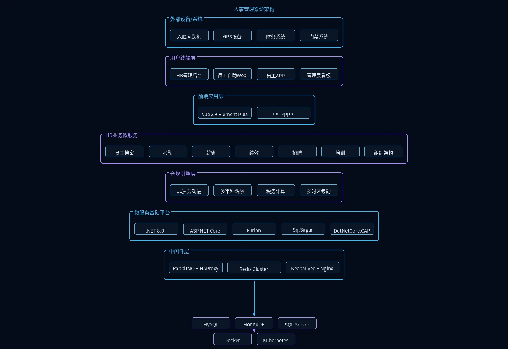

人事管理系统是企业人力资源管理的核心数字化平台。针对跨国企业在非洲运营时面临的多组织架构、本地合规与人员调配等复杂挑战，系统整合组织架构、劳务管理、考勤薪酬与审批流程，实现贯穿员工在职全周期的人员管理，帮助企业提升人事运营效率并确保合规可控。
核心功能
组织架构
对项目现场所有施工班组进行统一建档与管理，包括班组成立、信息维护、负责人指定及进退场状态管理。
劳务管理
建立并维护项目管理层与建筑工人的实名制信息档案，实现"一人一档"，支持调入调出、警告记录与解聘手续线上办理。
考勤管理
通过闸机、移动端或打卡设备采集工人每日出勤数据，生成个人与班组考勤统计报表，支持排班、核查与补卡分析。
工资管理
根据考勤、奖惩等数据自动生成月度工资明细清单，支持工资编制审核、节假日确认与年终奖发放。
基础数据
维护公司类型、岗位、工种及节假日等基础信息库，为人员分类、权限分配与薪酬计算提供标准化数据支撑。
审批管理
工长通过APP提交施工人员信息后，人事经理可在后台一键完成入职、转正与调薪申请的快速审核。
应用场景
集团多组织架构管理
大型跨国建筑集团在非洲多国设立分公司与项目部，通过系统统一维护集团、区域、项目三级组织架构，实现人员信息跨层级流转与权限精准分配。
跨国劳务与薪酬管理
中外籍员工混合管理场景下，系统支持实名制建档、多币种薪资核算与本地节假日适配，确保薪酬发放合规可追溯。
智能考勤与设备联动
工地现场部署人脸识别闸机与GPS定位打卡设备，考勤数据实时汇聚至系统，自动生成个人与班组出勤报表，支撑工资核算。
人事审批全流程线上化
工长通过APP提交人员调入、转正与调薪申请，人事经理在后台一键完成多级审核，审批记录全程留痕，提升人事运营效率。
模块化设计
可根据企业规模和业务特点灵活配置功能模块，快速上线。
多语言多时区
支持中、英、法三语界面与多时区考勤，满足跨国企业需求。
设备系统对接
与中国主流考勤与门禁设备、财务系统无缝对接，数据互通共享。
三层技术架构
服务端/WEB端/移动端分层解耦，易于扩展与维护。
系统架构

系统采用员工全生命周期+非洲本地化合规架构：人脸考勤机、GPS设备与门禁系统三路考勤数据汇聚至考勤服务，跨时区换算后流入薪酬服务；独立合规引擎层涵盖非洲劳动法、多币种薪酬计算、税务自动计算与多时区考勤四大引擎，支撑奈拉/美元/人民币薪资发放及当地税务合规；员工档案、招聘、绩效、培训、组织架构七大HR服务覆盖从入职到离职全流程，SQL Server归档历史薪酬档案。